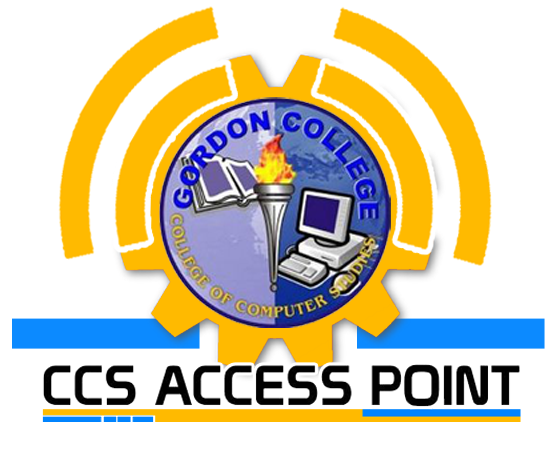

Version 1.2.2
CCS Access Point (CAP) is a cross platform mobile student portal created for Gordon College - College of Computer Studies. It was created to provide communication medium that is beneficial among the Faculty Members, Parents and especially the Students and to promote innovation for the college by providing convenient way of viewing their grades and portable reference of college information.
This application is created using HTML5, Javascript and CSS and it is available on BlackBerry World for z10 and q10, Google Play for Android phones and App Store for iOS version.